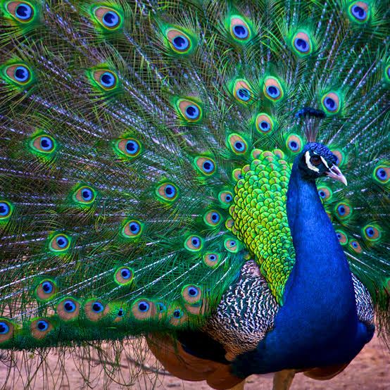

El pavo real es una de las aves galliformes más famosas del mundo debido al espectacular abanico multicolor que poseen los machos, quienes pueden pesar entre 4 y 6 kg, mientras que las hembras son más pequeñas, de plumaje marrón apagado y carecen de esta gran cola. Su rasgo más distintivo es el conjunto de plumas alargadas de la rabadilla del macho, decoradas con "ojos" u ocelos de tonos azules, verdes y dorados, las cuales despliega en forma de abanico vertical durante el cortejo para impresionar a las hembras o para intimidar a posibles rivales. Ambos sexos poseen un pequeño copete de plumas en la cabeza y un cuello de un azul metálico intenso en el caso de la especie más común. Tienen una dieta omnívora que incluye semillas, frutos, insectos y pequeños reptiles, y aunque pasan la mayor parte del tiempo en el suelo buscando alimento, mantienen la capacidad de dar vuelos cortos para refugiarse en las ramas altas de los árboles por la noche. Es un ave territorial y de temperamento alerta que habita originalmente en los bosques secos caducifolios, matorrales y zonas agrícolas del sur de Asia, principalmente en la India, aunque hoy en día se encuentra introducido en parques y jardines de todo el mundo.